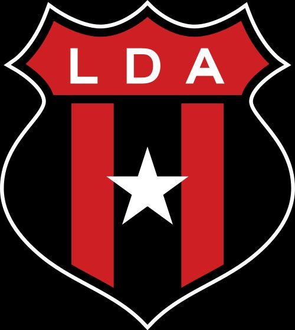

El equipo de su gente  Fig 3. El escudo de la Liga Deportiva Alajuense Canción del Club El navegador no soporta este tipo de audio Canción disponible en: YouTube Úbicación del Estadio Nota: El estadio de la Liga Deportiva Alajuense tiene una tienda del equipo cerca